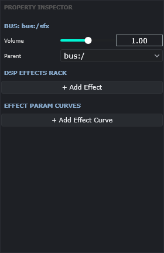
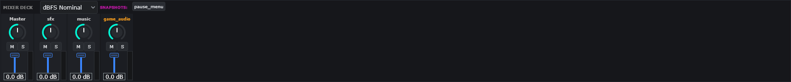

Fundamentos — Topologia de Mixagem, Buses, VCAs e Snapshots
Domine a engenharia de mixagem do OpenAudio Studio: entenda o caminho completo do sinal (Signal Flow), a diferença cirúrgica entre a soma de áudio em um Bus e o controle escalar de um VCA, e como orquestrar estados sonoros reativos usando Snapshots declarativos.
1. O Caminho do Sinal (Signal Flow)
Para projetar um mix equilibrado, você precisa visualizar com precisão cada etapa percorrida pelas amostras de áudio, desde o arquivo no disco até os alto-falantes:
+--------------------------------------------------------------------------+
| FLUXO DO SINAL (SIGNAL FLOW) NO OPENAUDIO RUNTIME |
+--------------------------------------------------------------------------+
| |
| [ DISCO / RAM ] |
| | Leitura e decodificação PCM |
| v |
| [ PISTA DO EVENTO (Track) ] |
| | Fader da Pista & Pan Estéreo |
| v |
| [ MASTER TRACK DO EVENTO ] |
| | Atenuação 3D (Distância, Cones, Envelopment) |
| | Processadores de Efeito da Instância (EQ, Modulação) |
| v |
| ==================== FRONTEIRA DA INSTÂNCIA ========================== |
| | Roteamento via "Bus Route" (ex: bus:/sfx/armas) |
| v |
| [ SUB-BUS DE CATEGORIA (bus:/sfx/armas) ] |
| | SOMA PCM de todas as instâncias concorrentes |
| | Efeitos de Inserção de Barramento (Compressor, EQ) |
| | Multiplicação escalar por VCAs e Snapshots |
| v |
| [ BUS PAI (bus:/sfx) ] |
| | Soma com outros sub-buses (passos, impactos, veículos) |
| v |
| [ MASTER BUS (bus:/) ] |
| | Soma de SFX, Música, Vozes e UI |
| | Limiter de Proteção Final (0 dBFS) |
| v |
| [ HARDWARE DE SAÍDA (Placa de Som / Fones de Ouvido) ] |
+--------------------------------------------------------------------------+2. O que é um Bus? Soma PCM e Árvore de Mixagem
Um Barramento de Áudio (identificado pelo prefixo bus:/) é um ponto de convergência digital onde múltiplos fluxos de áudio independentes são combinados em um único buffer de memória compartilhado.
A cada bloco de processamento (por exemplo, a cada 512 amostras a 48.000 Hz), o motor realiza a soma algébrica das ondas:
Amostra_Mix[n] = Amostra_Tiro[n] + Amostra_Passo[n] + Amostra_Explosao[n]Por possuir um buffer real de áudio, um Bus oferece três capacidades exclusivas:
-
Inserção de Efeitos Coletivos (DSP Inserts): Você pode inserir um compressor em
bus:/dialogospara nivelar todas as vozes dos personagens simultaneamente, ou um equalizador para cortar sub-graves de passos. -
Roteamento em Árvore Hierárquica: Cada barramento aponta para um barramento pai (campo
Parentno Inspector), culminando sempre no Master Bus (bus:/). - Envios Auxiliares (Sends e Returns): Eventos podem enviar frações de seu sinal para um barramento auxiliar com Reverb compartilhado, evitando a duplicação pesada de efeitos na CPU.

3. Headroom, Soma e Estrutura de Ganho (Gain Staging)
No domínio digital, 0 dBFS (Decibels Relative to Full Scale) é o teto máximo absoluto antes que ocorra ceifamento digital (clipping) e distorção harmônica desagradável.
Somar dois sinais correlacionados de -3 dBFS resulta em um sinal somado de até +3 dBFS (acima do teto de 0 dBFS!).
Em jogos com dezenas de sons simultâneos, se todos os eventos forem autorados próximos de 0 dB, a soma no Master Bus causará clipping inevitável. Por isso, mantenha uma margem de segurança (headroom) de pelo menos -6 dB a -12 dB nos barramentos de categoria e insira sempre um Limiter no Master Bus como barreira final.
4. O que é um VCA? O Controle Remoto Escalar
VCA significa Voltage-Controlled Amplifier (Amplificador Controlado por Tensão). Nos consoles analógicos clássicos de estúdio, o fader de um VCA não conduzia sinal sonoro; ele emitia uma tensão contínua que comandava atenuadores em múltiplos canais remotos.
No OpenAudio Studio, NENHUM ÁUDIO PASSA POR DENTRO DE UM VCA. O VCA é estritamente um multiplicador matemático de ganho aplicado aos faders dos barramentos ou eventos associados.
A Equação Real de Ganho
O volume final com que um canal é reproduzido é o produto de todos os controles que incidem sobre ele:
Ganho_Efetivo = Ganho_Fader * Ganho_VCA_1 * Ganho_VCA_2 * Ganho_SnapshotPor que usar VCAs se já temos Buses?
-
Controle Transversal (Cross-Category): Em menus de opções, o jogador espera um controle chamado "Volume de Efeitos" e outro "Volume Geral". Se o jogo tiver barramentos em galhos completamente separados da árvore (como
bus:/sfx,bus:/cinematics/efeitosebus:/veiculos), criar um bus pai comum destruiria a topologia de mixagem. O VCA modula todos eles ao mesmo tempo sem alterar sua rota física de áudio! - Zero Custo de Memória e DSP: Um Bus aloca buffers de mixagem na memória RAM e processa blocos de áudio na CPU. Um VCA realiza apenas uma multiplicação escalar trivial por quadro, com custo computacional praticamente nulo.
-
Preservação do Equilíbrio Relativo: Se os diálogos estão em
-3 dBe a música em-9 dB, abaixar um VCA comum reduz ambos na mesma proporção, mantendo o equilíbrio artístico original intocado.
5. Tabela Comparativa Definitiva: Bus vs. VCA
| Critério de Engenharia | Bus (Barramento de Áudio) | VCA (Controle Remoto de Ganho) |
|---|---|---|
| Fluxo de Sinal | Áudio PCM real passa por dentro do componente. | Nenhum áudio flui; atua por controle remoto. |
| Alocação de Memória | Aloca buffers de mixagem PCM em RAM. | Zero buffers alocados; ocupa bytes de metadados. |
| Efeitos e Processadores DSP | Permite inserir plugins (EQ, Compressor, Reverb). | Impossível inserir efeitos (não há buffer de áudio). |
| Topologia de Conexão | Estrita em árvore hierárquica (pai e filhos). | Transversal (pode controlar qualquer item do projeto). |
| Envios e Retornos (Auxiliares) | Suporta Sends e Returns. | Não suporta envios ou retornos. |
| Custo de CPU | Processamento de blocos de áudio e plugins. | Multiplicação escalar instantânea de ponto flutuante. |
| Melhor Aplicação Prática | Sub-mixagem de categorias e efeitos conjuntos. | Menus de opções do usuário e controle de grupos. |
6. Snapshots: A Máscara Dinâmica da Mesa
Em produções de jogos, a mixagem nunca é estática. A qualquer instante, acontecimentos do jogo exigem que a mesa reaja:
- O jogador abre o menu de pausa;
- A vida do protagonista fica crítica (batimento cardíaco alto, mundo abafado);
- O personagem mergulha a cabeça na água;
- Uma granada de atordoamento (flashbang) explode próxima.
Sem Snapshots, o programador precisaria escrever códigos complexos para alterar 10 faders manualmente, calcular curvas de interpolação e memorizar os valores anteriores para restaurá-los. Se dois eventos ocorressem ao mesmo tempo, a mixagem travaria em estados inconsistentes.
Um Snapshot (snapshot:/) é uma máscara fotográfica inteligente sobre a mesa.
Ele define o que muda (deltas de ganho, filtros ativados) e possui seus próprios tempos de Fade-In (tempo para entrar) e Fade-Out (tempo para retornar ao normal).
O código do jogo apenas inicia e para o snapshot como se fosse um evento:
// Ativação limpa e declarativa no jogo:
EventInstance pausa = AudioSystem.PlaySnapshot("snapshot:/menu_pausa");
// Ao fechar o menu:
pausa.Stop(FADEOUT); // O motor restaura a mixagem suavemente de forma automática!
7. Modos de Conflito: Override vs. Blending
O que acontece quando dois snapshots tentam modificar o mesmo fader ao mesmo tempo? (Por exemplo: o jogador está ferido e abre o menu de pausa simultaneamente). O OpenAudio Studio resolve essa colisão através de dois modos:
1. Modo Override (Substituição por Prioridade)
Cada snapshot possui uma prioridade numérica. O snapshot ativo com a maior prioridade assume o controle exclusivo do parâmetro conflitante. Snapshots de menor prioridade são temporariamente ignorados naquele fader específico.
O snapshot snapshot:/menu_pausa tem prioridade 100, enquanto snapshot:/debaixo_dagua tem prioridade 30. Ao pausar o jogo enquanto submerso, o Menu de Pausa vence e dita o volume da música, sem somar atenuações indevidas.
2. Modo Blending (Composição Ponderada / Aditiva)
Os deltas de todos os snapshots ativos são combinados matematicamente. Se um snapshot de chuva reduz a música em -3 dB e um snapshot de perigo reduz em -5 dB, a redução resultante aplicada ao barramento será de -8 dB.
8. Cenários Práticos de Produção
Cenário 1: O Efeito de Submersão Aquática
- Alvo:
bus:/sfxebus:/musica. - Ação: Aplica atenuação de -8 dB e ativa um filtro Low-Pass cortando frequências acima de 400 Hz.
- Fade-In: 200 ms (suave, simulando a água cobrindo as orelhas).
- Fade-Out: 350 ms (tempo para o ar voltar e as altas frequências clarearem).
Cenário 2: Ducking de Diálogo em Tiroteios
Quando um personagem importante fala pelo comunicador de rádio, um snapshot pode atenuar suavemente o barramento bus:/sfx/armas em -10 dB, garantindo inteligibilidade cristalina das falas sem precisar mexer nos volumes gravados dos tiros.
9. Erros e Armadilhas Comuns de Mixagem
Se você adicionar o barramento filho (bus:/sfx/armas) e também o barramento pai (bus:/sfx) aos membros do mesmo VCA, o sinal das armas será atenuado duas vezes pelo mesmo fader (ex: uma redução de -6 dB virará -12 dB). Associe apenas o nível hierárquico necessário.
Não é possível adicionar reverb ou equalizador a um VCA, pois nenhum áudio trafega por ele. Para processar áudio compartilhado, utilize sempre um Bus.
Configurar o tempo de Fade-Out de um snapshot para 0 ms provocará estalos sonoros (clicks/pops) ao desativá-lo, devido ao degrau abrupto de amplitude na onda de áudio. Mantenha tempos de transição de pelo menos 50 a 150 ms para transições imperceptíveis.